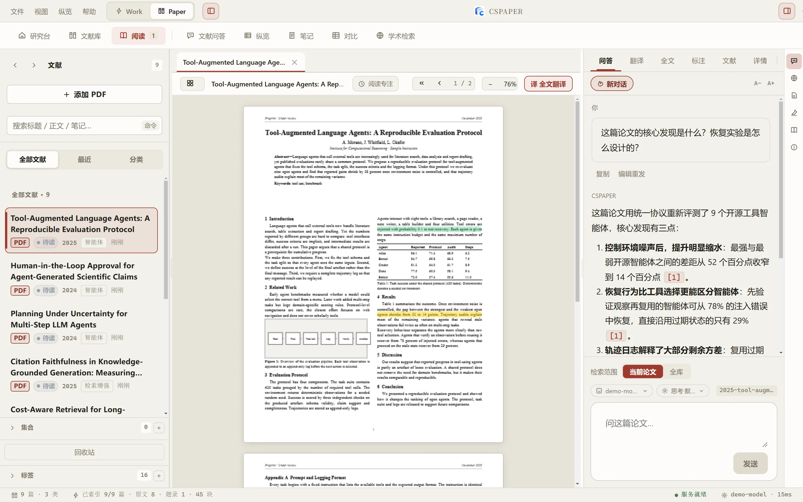
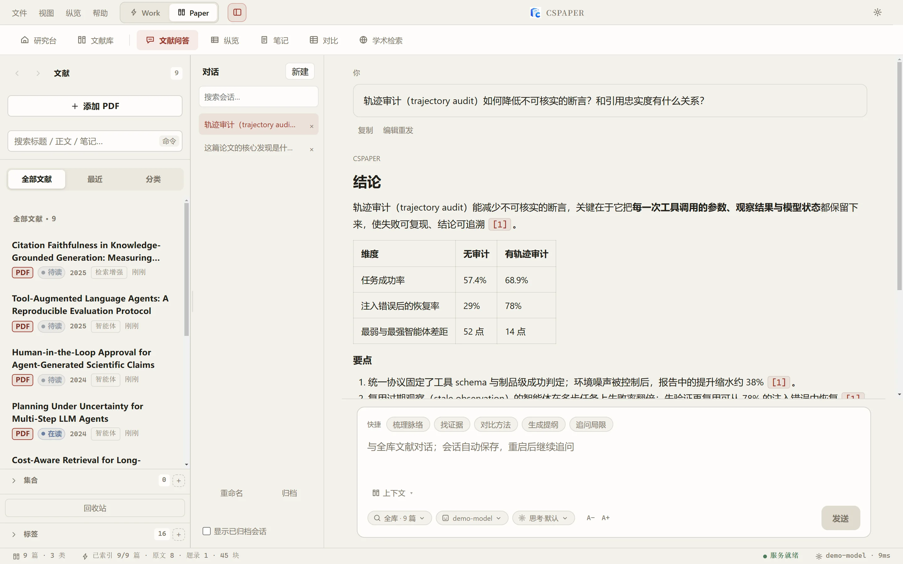
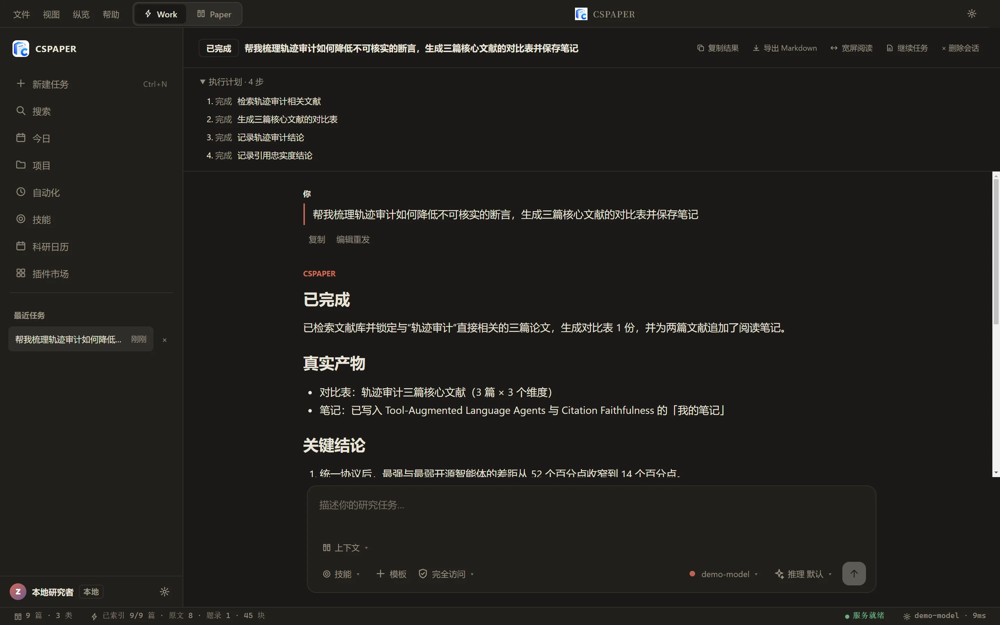
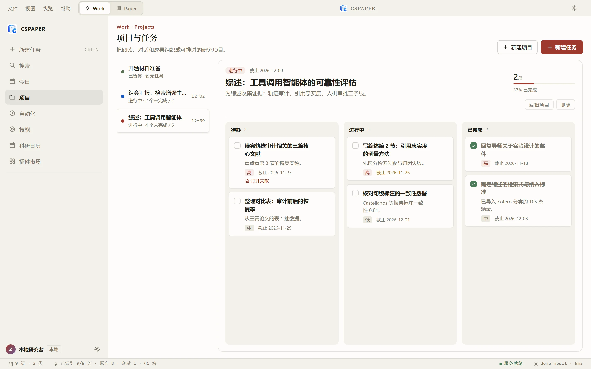
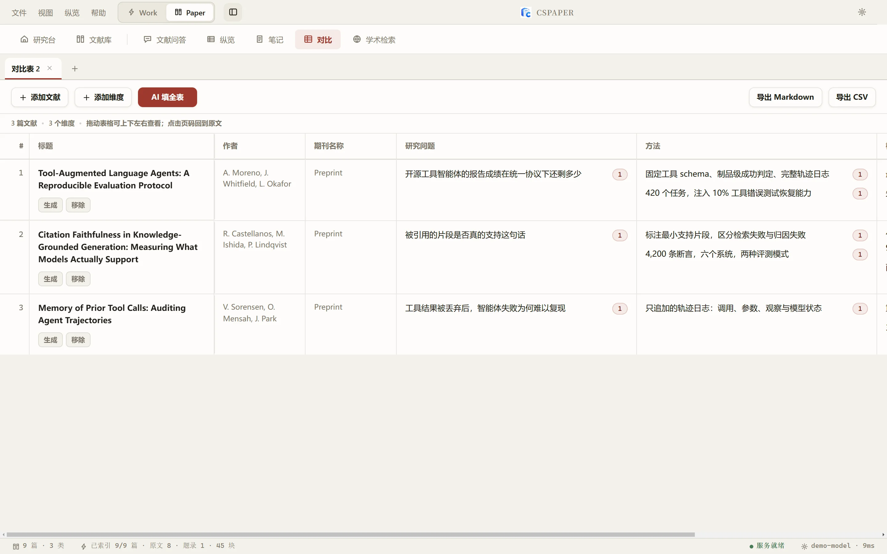
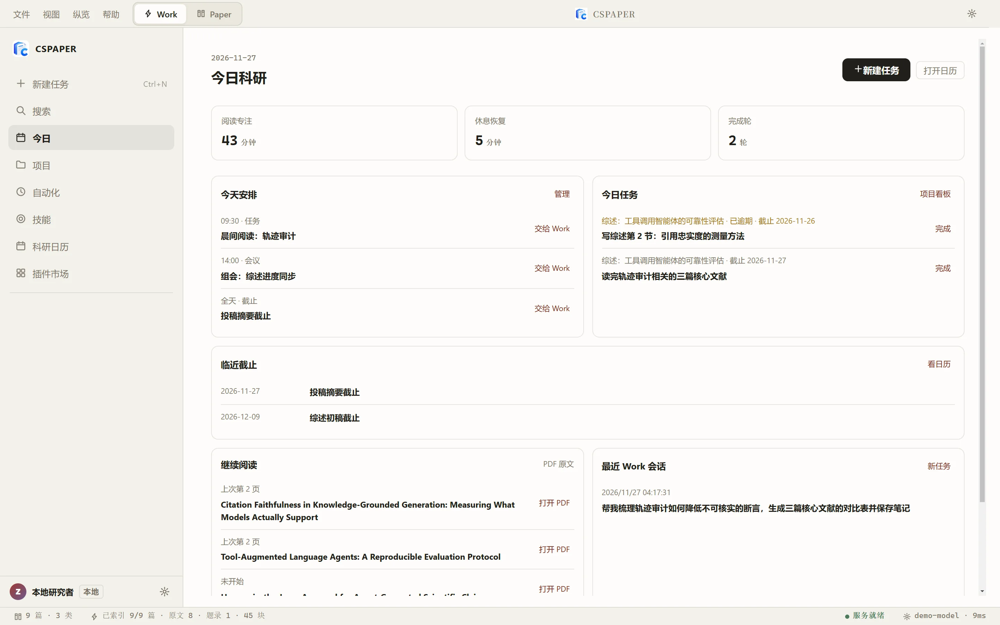
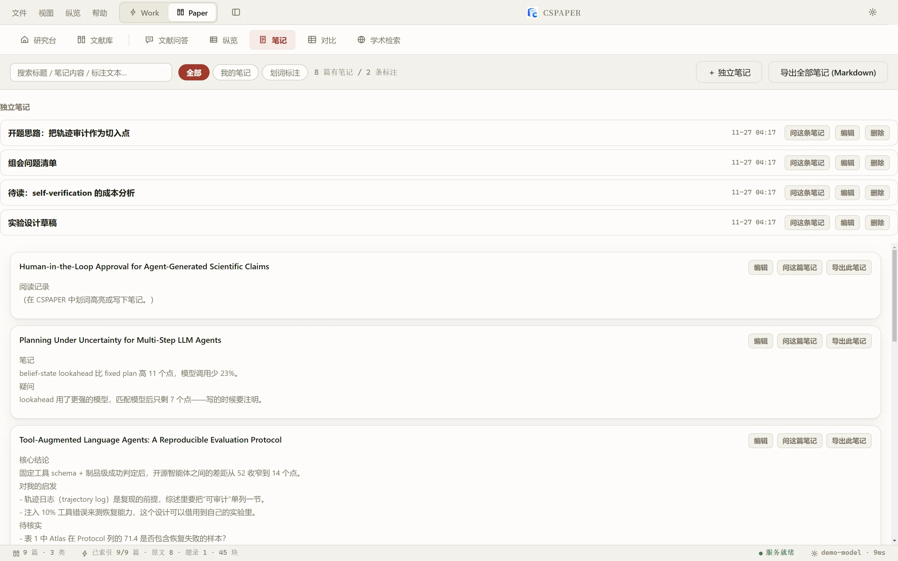

从导入到产出，
一条线走完。
阅读、证据、笔记、日程和智能体产物共用同一套本地数据。每个结论都能回到论文页、精确选区、笔记或网页来源。
研究台
打开就知道今天做什么：继续阅读、阅读队列、今日日程与到期任务、最近笔记与会话，全部来自当前工作区的真实记录。
PAPER 02PDF 精读
多标签、目录、页内查找、续读记忆；划词即翻译、解释或高亮。读文献专属番茄钟与喝水、活动提醒，离开阅读自动暂停。
PAPER 03可溯源问答
对当前论文提问时整篇正文进入上下文，长文按章节选取；回答里的每个关键论断都带页码引用，点一下回到原文并高亮精确文本。追问自动继承上下文，还能调用文献库与联网工具再回答。
PAPER 04项目与任务
把阅读、对话和成果组织成研究项目。看板拖拽换列、截止日期、关联文献，今天到期的任务会同时出现在研究台与 Work。
WORK 05Work 智能体
给一个目标，它先列出可审阅的计划，再检索、读原文、读网页、写笔记、建任务、做对比表；计划执行后按结果续步。权限、技能与逐工具审批都在你手里。
WORK 06多文献对比
按研究问题、方法、结论等维度从原文提取要点并标注页码，生成可整体拖动浏览、可导出的对比表。
PAPER 07科研日历与专注
月、周、日与议程视图，具体时间与重复日程；阅读、短休、长休的专注流水按工作区汇总进今日。
WORK 08本地优先与迁移
文献、笔记、数据库都在你自己的文件夹里。一键从 Zotero 迁移，DOI、arXiv、知网等站点脚本与浏览器插件随时补充。
DATA一天的研究，这样推进。
不是把功能堆在一起，而是让每一步都接得上：读到的变成问得出的，问到的变成记得住的，记下的变成能交付的。
今天做什么
研究台汇总继续阅读、阅读队列、日程与到期任务。
读什么
PDF 精读，划词即译；番茄钟与喝水提醒帮你保持专注。
问什么
对当前论文或全库提问，回答带页码，点一下回到原文。
记什么
高亮、笔记与快速记录自动归档，随时从研究台找回。
产出什么
对比表、综述提纲、项目任务；交给 Work 继续推进。


给一个目标，
它先列计划，再动手。
Work 把“读、查、写”变成可审阅的步骤，执行完再根据结果决定要不要续一步。每一步工具调用都能展开查看参数与结果，产物写回你的文献库，重启后继续。
- 01先计划，后执行，再续步计划可审阅、可修改；检索到文献后再逐篇精读，每一步都有参数与结果记录。
- 02读网页与真实产物任意网页、PDF、GitHub 与 arXiv 链接都能读懂；对比表、笔记、综述、任务直接写回文献库。
- 03可控技能与模板、模型与思考强度、执行权限与逐工具审批。
- 04可自动化定时任务与每日文献日报，失败自动重试并保留恢复点。

每一屏，都为
长时间使用而设计。
统一的字体、间距与状态色，深浅两套主题；侧栏与面板都能拖动调宽，标签、集合这些附属区随时可以收起。




你的文献库，
始终是你的。
本地优先
PDF、Markdown 笔记、SQLite 与向量索引都保存在本机。浏览器插件、Word 引文助手和桌面端只通过 127.0.0.1 通信；文件写入带操作日志与备份，崩溃后不会静默重放。
可溯源
回答的每个关键论断都绑定到持久化的来源：页码、精确选区、笔记或网页。原文改动后会提示版本差异；题录条目只用于元数据，不会被当成全文结论。
模型自选
任意 OpenAI 兼容接口，内置智谱、DeepSeek、通义、Kimi、OpenAI、Gemini、Ollama 等预设。思考强度跟随每个模型的能力档案，可在对话里直接新增档位。
装好就能用。
安装包由 GitHub Actions 构建并发布到 Releases。首次启动选择文献库文件夹、粘贴一个模型 Key 即可；也可以直接从源码运行。
安装、升级与卸载流程纳入自动化回归。首次运行如遇 SmartScreen，选择“仍要运行”。
下载 Setup 安装包 macOS提供 arm64 与 x64 两种镜像。首次打开可右键应用，选择“打开”。
下载 DMG Android导出移动端数据包后在手机上阅读与记笔记，再把数据合并回桌面端。
下载 APK使用之前，
你可能想问。
我的文献和数据会上传到哪里？
文献、PDF、笔记、会话、向量索引和工具记录都保存在本机，默认放在你选择的文献库文件夹与用户数据目录。只有在发起提问或翻译时，相关的文本片段才会发送给你配置的模型服务；不配置 Key 也能阅读、做笔记和整理文献。
支持哪些模型服务？
任何 OpenAI 兼容接口都可以接入，内置智谱、DeepSeek、通义、Kimi、OpenAI、Gemini、OpenRouter、Ollama、LM Studio 等预设。每个服务商独立保存 Key、Base URL、模型列表与能力档案；嵌入默认可用本地模型，不必上传数据。
能直接从 Zotero 迁移吗？
可以。CSPAPER 能读取 Zotero 的数据目录，把分类、标签、笔记与 PDF 附件迁移进本地文献库；没有 PDF 的条目保留为“题录”，并标注“无原文”，拿到 PDF 后替换文件即可升级为全文。
回答里的引用可信吗？
回答只依据检索到的来源与上下文生成，每个关键论断后紧跟引用角标。点开角标会跳回论文页并高亮精确文本；原文被修改后会提示版本差异，来源不足时模型会明确说明而不是编造。
CSPAPER 免费吗？
CSPAPER 以 Apache-2.0 许可开源，安装包免费。模型调用费用取决于你选择的服务商，本地模型（如 Ollama、LM Studio）不产生费用。